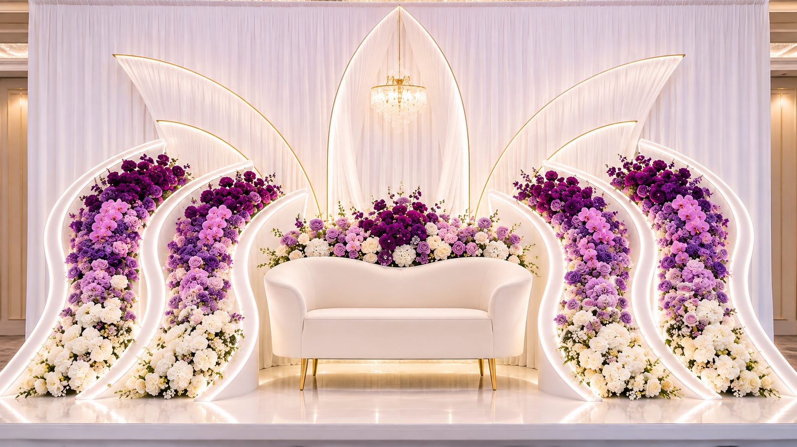
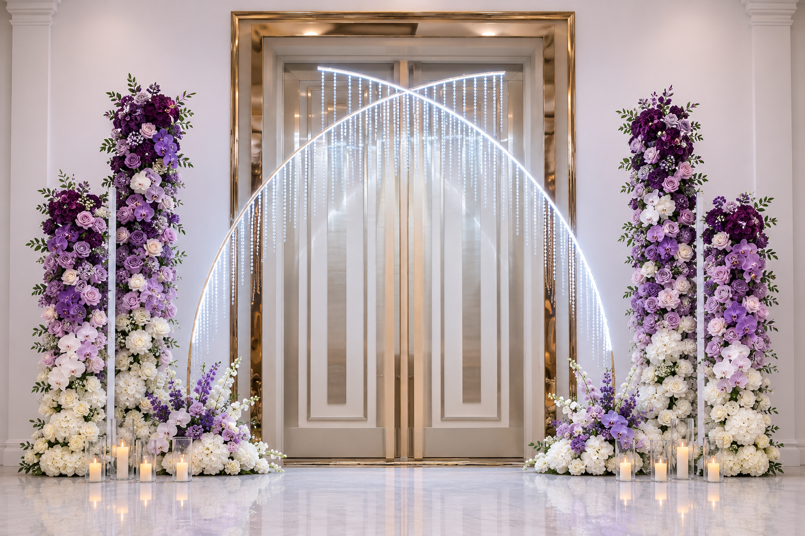

Shainy & Udara
Hotel Decorations
Purple to white
Back
Every floral piece moves from deep purple through lilac into white. The setty platform and the couple’s chair stay white.
Setty
Setty back
A white draped wall with a glowing petal-shaped frame. Flowers run from deep purple at the top to white at the floor. The platform is white, and the couple’s chair is white.
Lights stay off until the couple arrive. Switch them on as the couple reach the setty.
- Setty back — purple to white
- Platform — white
- Setty back chair — white

Guest tables
Table decorations
Two centrepiece styles, both in the same purple-to-white flowers.
Flower balls
A round bouquet on a slim gold stand.

Flowers with candles
A low floral mound with tall glass candle holders rising through the flowers.

Ceremony
Oil lamps
A gold frame with a purple-to-white floral fall and hanging oil lamps. Place six lamps.
- Color — purple to white
- Number of oil lamps — 6

Setty
Couple’s table
A white-clothed table framed by a purple-to-white floral garland, with a candle set in front.
- Color — purple to white
- Candle set — 6

Arrival
Entrance
Two light arcs over the doorway, four flower columns in purple to white, and candles at the base.
- Light arcs — 2
- Flower columns — 4
- Candles — 8
